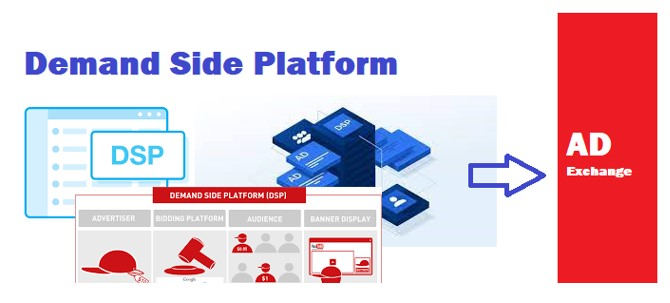

DSP Platform for Advertisers
Amplify Your Brand Potential

Unleash the power of programmatic advertisements and revolutionize your ad campaigns with our cutting-edge
Demand side Platform (DSP) that allows advertisers and media buying agencies to bid automatically on Display,
Video, Mobile and search ad inventories from a wide range of Publishers available at our Supply side platform.
Our DSP Platform can automate the decision-making process on how much to bid for an ad in real time. DSP make
the ad-buying process significantly faster, cheaper and more efficient.
The key feature of our demand-side platforms is that instead of buying inventory on publishers, what you buy is
the ability to reach specific audience segments based on the DSP targeting capabilities, across a range of
publisher sites.